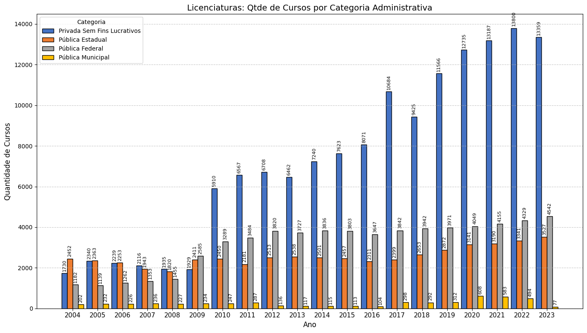
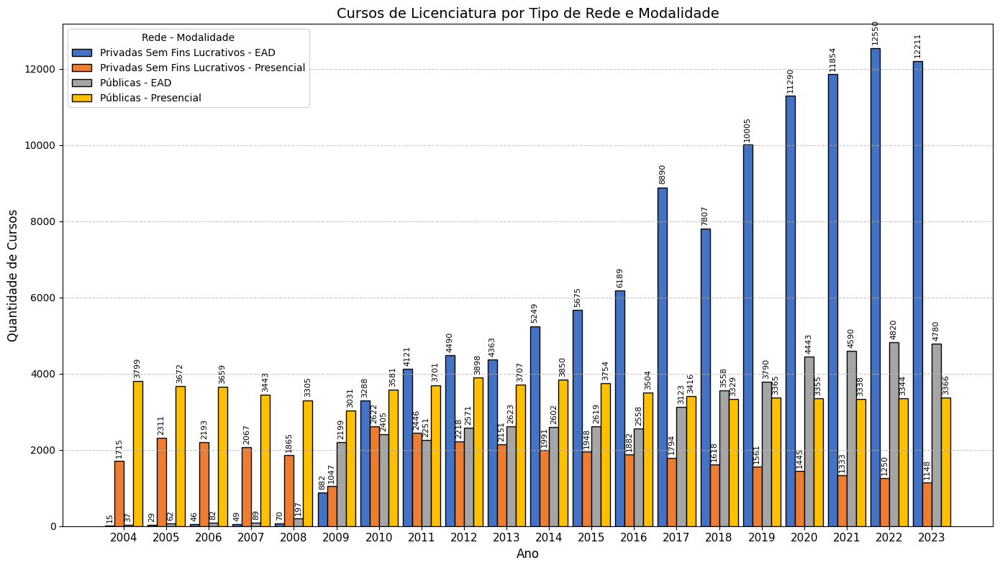
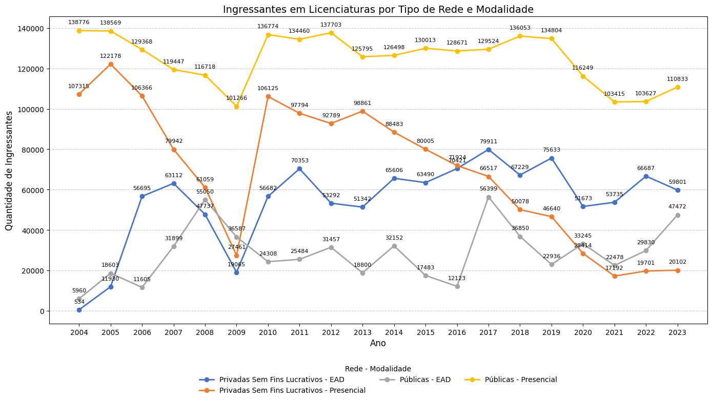
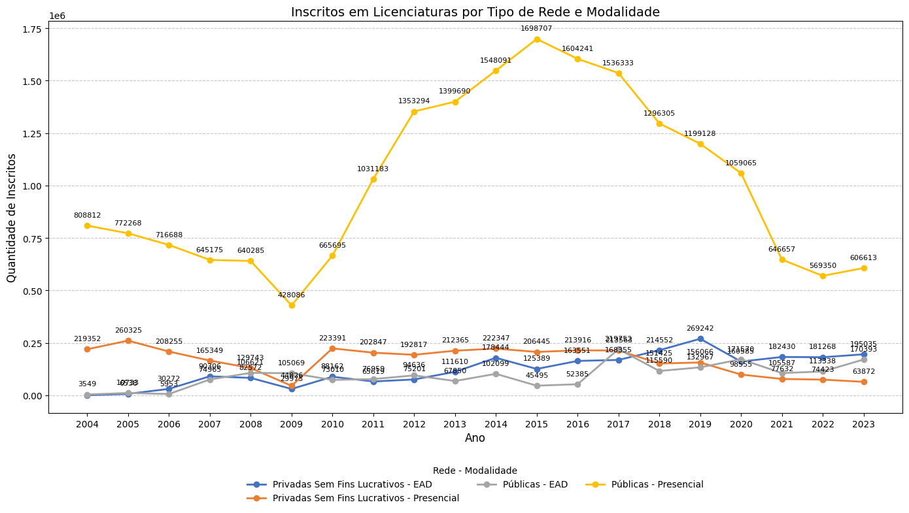
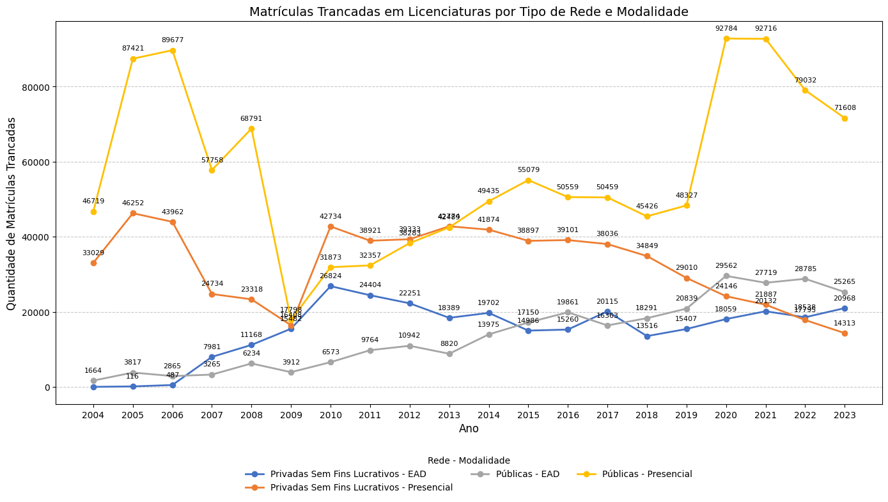
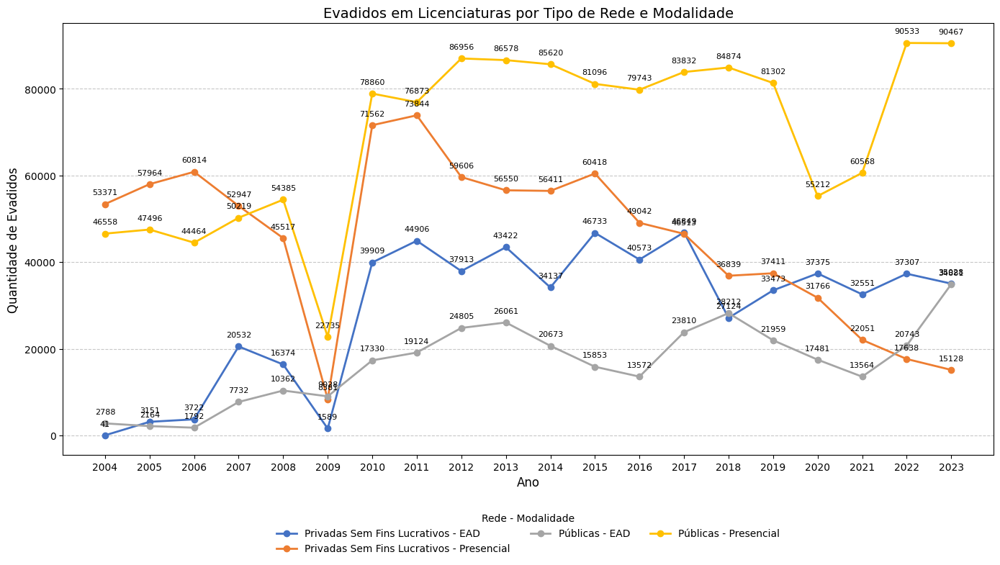
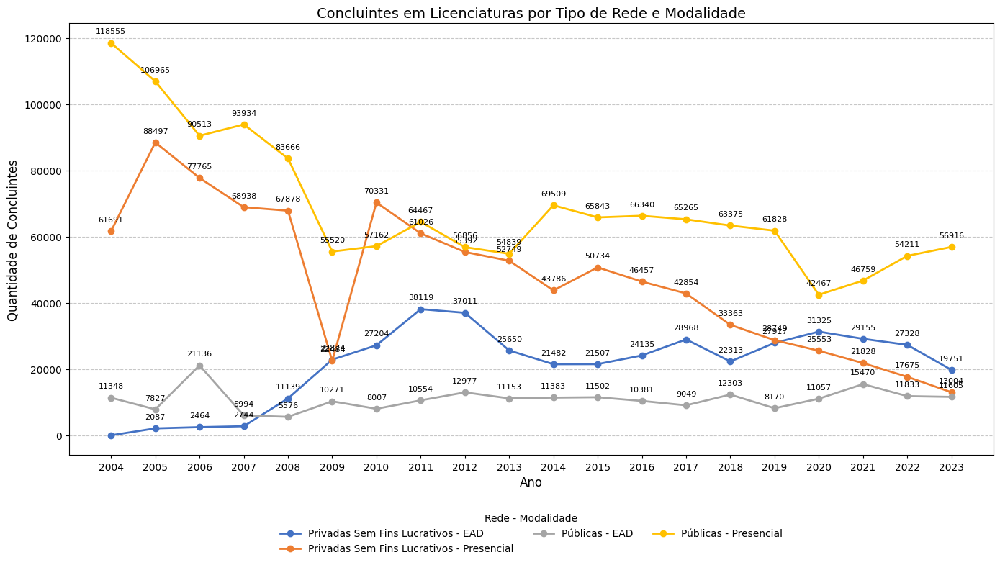

Licenciaturas: Qtde de Cursos por Categoria Administrativa

Cursos de Licenciatura por Tipo de Rede e Modalidade

Ingressantes em Licenciaturas por Tipo de Rede e Modalidade

Inscritos em Licenciaturas por Tipo de Rede e Modalidade

Matrículas Trancadas em Licenciaturas por Tipo de Rede e Modalidade

Evadidos em Licenciaturas por Tipo de Rede e Modalidade

Concluintes em Licenciaturas por Tipo de Rede e Modalidade

Relação (%) de Concluintes, Trancados e Evadidos sobre Ingressantes em Licenciaturas

Desenvolvido por sua equipe | Dados: INEP, CAPES, etc.
Ver código no GitHub
Ver código no GitHub